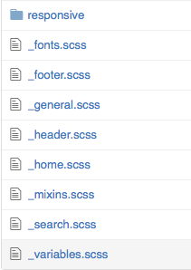

(Syntactitcally Awesome Style Sheets)
Le CSS possède des limites, c'est pourquoi des personnes on créer ce que l'on appelle des pré-processeurs du langages CSS.
En gros, c'est une extension du langage CSS.
Il ajoute des options bien pratique tel que : les variables, le nesting, les mixins, et d'autres options très utiles !
Effectivement il existe d'autres langages pré-procésseur CSS
Less, Stylus et SCSS mais SASS va plus loin dans la simplification.
On peut même dire arivederci au {}.
Mais dans un soucis de compréhension tout les exemples seront en SCSS
Un Pré-processeur signifie qu'il y a un procéssus de compilation entre le code d'entrée et le code de sortie
Tu profite de tout les avantages de SASS et le compilateur lui s'occupe de traduire tout ça en CSS
Le Top non ?
Tout cela laisse entendre qu'il va falloir installer SASS
Et c'est le cas !
Il suffit d'entrer une ligne de commande dans le terminale
gem install sassEasy
sudo gem install sassNous allons avoir besoin du terminal et d'un projet
Nous devons créer un dossier CSS et un dossier SCSS au même niveau
Le dossier SCSS devras contenir un fichier style.scss
Enfin dans le terminale en étant dans le dossier du Projet
Il suffit d'entrer:
sass --watch scss:cssA partir de maintenant à chaque sauvegarde du fichier SCSS la compilation se fera automatiquement dans un fichier style.css dans le dossier CSS.
Ok ...
Bon, à partir de maintenant on rentre dans le vif du sujet !
SASS permet d'attribuer des valeurs à des variables
Et cela très facilement il suffit d'écrire
$variable:valeur;$color-red: #ff0000; $title-size: 20px; body{ color: $color-red; font-size: $title-size; }
body{ color: #ff0000; font-size: 20px; }
Le nesting c'est appliquer le principe d'héritage au CSS
Un exemple sera plus parlant
nav{ background-color: #FEFEFE; ul{ li{ margin-left:5px; } } }
nav{ background-color: #FEFEFE; } nav ul li { margin-left:5px; }
On peut l'utilisé avec les symboles de sélecteur CSS
article{ ~ article{ padding-top: 2em; } > h2 { border : 1px solid #FF0000; } + footer{ margin-top: 0px; } * { color: #000; } }
article ~ article { padding-top: 2em; } article > h2{ border : 1px solid #FF0000; } article + footer{ margin-top: 0px; } article * { color:#000; }
On peut aussi sélectionné le parent avec "&"
a{ color: blue; &:hover{ color:green; } display:inline-block; }
a{ color:blue; display:inline-block; } a:hover{ color:green; }
On peut aussi ajouter un contexte avec "&"
article{ h2{ font-size: 2em; } .info &{ h2{ font-size: 1.5em; } } display: inline-block; }
article{ display:inline-block; } article h2 { font-size:2em; } .info article h2{ font-size:1.5em; }
Les media queries
.container{ margin: 0 auto; @media screen and(min-width: 1280px){ margin: 25px; } @media screen and (min-width: 768px){ margin: 10px; }
.container{ margin : 0 auto; } @media screen and (min-width: 1280px){ .content{ margin : 25px; } } @media screen and (min-width: 768px){ .content{ margin : 10px; } }
Nous permet d'appeller les propriete d'un séléecteur à un autre.
.button{ width: 50px; height: 25px; border: 1px solid #DDD; } .button-success{ @extend .button; border-color: green; }
.button, .button-success{ width: 50px; height: 25px; border: 1px solid #DDD; } .button-success{ border-color: green; }
C'est une options qui permet de réutiliser des morceaux entier de CSS.
On peut même lui donner des arguments, pour créer des formes complexes avec une seule ligne de code !
@mixin border-radius($radius) { -webkit-border-radius: $radius; -moz-border-radius: $radius; -ms-border-radius: $radius; border-radius: $radius; } .box { @include border-radius(10px); }
.box { -webkit-border-radius: 10px; -moz-border-radius: 10px; -ms-border-radius: 10px; border-radius: 10px; }
Oui il y a des librairies de mixin SASS :
Je te laisse de renseigner sur le sujet c'est très utiles notament le principe de sprites.
Avec SASS on peut importer différentes feuilles de styles dans le fichier principale.
Un exemple d'arborésence pouvant êtres utilisé
Et voici comment on import les fichier dans le fichier mère
@import"compass"; @import"compass/reset"; @import"scss/mixins"; @import"scss/variables"; @import"scss/fonts"; @import"scss/general"; @import"scss/header";
Comme tu peux le remarquer nous n'avons pas besoin de spécifier l'extesion du fichier importé étant donné que ce sera tous des .scss, SASS se charge de prendre le bon fichier